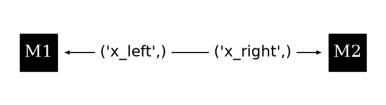
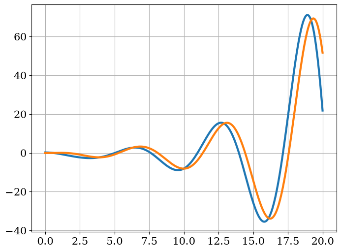
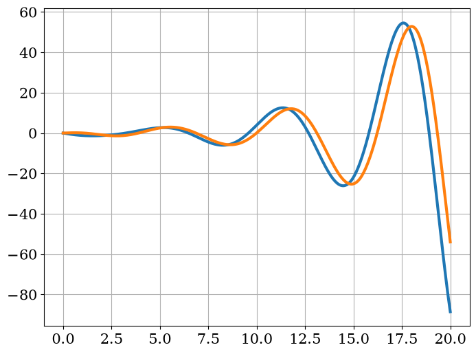
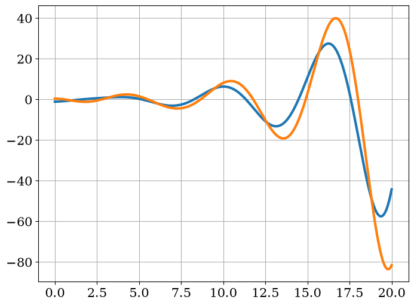

Coupled Masses and Springs¶
Consider a 1D system of point bodies to which two springs are attached in series. The force acting on each body is simply:
\[F_i = k_{i, l} \left[L_{i, l} - (x_i - x_{i - 1})\right] - k_{i, r} \left[L_{i, r} - (x_{i + 1} - x_i)\right]\]
Therefore, a reasonable approach in building a calculation is implementing the following equations:
\[\begin{split}\begin{aligned} \frac{dx}{dt} &= v \\
\frac{dv}{dt} &= a \\
F &= ma \end{aligned}\end{split}\]
[1]:
import matplotlib.pyplot as plt
import numpy as np
from matplotlib import rc
rc("font", family="serif", size=15)
rc("savefig", dpi=600)
rc("figure", figsize=(8, 6))
rc("mathtext", fontset="dejavuserif")
rc("lines", linewidth=3)
from networkx import DiGraph
from stream import Aggregator, Calculation, unpacked
from stream.aggregator import vars_
[2]:
class Mass(Calculation):
def __init__(self, m, k_right, k_left, L_right, L_left, name):
self.name = name
self.m = m
self.k_left, self.k_right = k_left, k_right
self.L_left, self.L_right = L_left, L_right
@property
def mass_vector(self):
return True, True, False
@unpacked
def calculate(self, variables, *, x_left, x_right):
x, v, a = variables
left_spring = -self.k_left * (self.L_left - (x - x_left))
right_spring = -self.k_right * (self.L_right - (x_right - x))
total_force = -left_spring + right_spring
return self.load({"x": v, "v": a, "a": total_force - a * self.m})
def indices(self, variable, asking=None):
try:
return super().indices(variable)
except KeyError:
pass
return {"x_left": 0, "x_right": 1}[variable]
@property
def variables(self):
return {"x": 0, "v": 1, "a": 2}
[3]:
M1 = Mass(name="M1", m=1.5, k_left=1.0, k_right=1.0, L_left=1.0, L_right=1.0)
M2 = Mass(name="M2", m=1.0, k_left=M1.k_right, k_right=1.0, L_left=M1.L_right, L_right=1.0)
agr = Aggregator(
graph=DiGraph([(M1, M2, vars_("x_left")), (M2, M1, vars_("x_right"))]),
funcs={M1: {"x_left": 0.0}, M2: {"x_right": 3.0}},
)
from stream.analysis.report import report
report(agr)
Contains 6 Equations, 2 Nodes, 2 Edges.
Calculation |
Type |
Equation No. |
Unset |
Set Externally |
Missing |
|---|---|---|---|---|---|
M1 |
Mass |
0 - 3 |
x_left |
||
M2 |
Mass |
3 - 6 |
x_right |
[4]:
plt.figure(figsize=(8, 2))
agr.draw(
node_options={
"pos": {M1: (0, 0), M2: (1, 0)},
"labels": {M1: "M1", M2: "M2"},
"node_size": 2000,
"font_size": 20,
},
edge_options={"label_pos": 0.3, "font_size": 18},
)
plt.box()

[5]:
y0 = np.array([1.2, 0.0, 0.0, 1.9, 0.0, 0.0])
time = np.linspace(0, 20.0, 400)
sol = agr.solve(y0=y0, time=time, yp0=agr.compute(y0, 0))
[6]:
plt.figure()
plt.plot(time, sol[:, 0] - 1, label="M1 position")
plt.plot(time, sol[:, 3] - 2, label="M2 position")
plt.grid()

[7]:
plt.figure()
plt.plot(time, sol[:, 1], label="M1 velocity")
plt.plot(time, sol[:, 4], label="M2 velocity")
plt.grid()

[8]:
plt.figure()
plt.plot(time, sol[:, 2] / M1.m, label="M1 force")
plt.plot(time, sol[:, 5] / M2.m, label="M2 force")
plt.grid()
